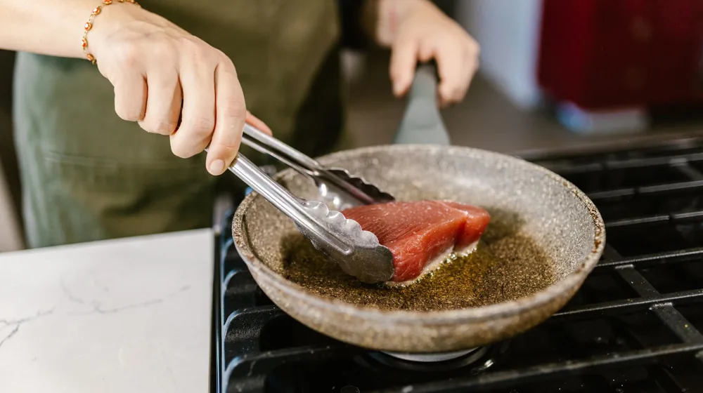

"내 체질엔 뭘 먹지?" 약선 밀키트 정기구독 서비스 완벽 비교
사진: Anna Shvets / Pexels (무료 이미지, 출처 표기)
건강한 일상을 여는 약선 밀키트 정기구독이란?

바쁜 일상 속에서 매번 건강한 밥상을 차리기는 쉽지 않습니다. 특히 몸에 이로운 약선(藥膳, 한의학 기초 이론을 바탕으로 건강 증진을 위해 조리한 음식)을 가정에서 직접 요리하려면 재료 수급부터 요리법까지 준비할 것이 너무 많습니다.
최근 이러한 번거로움을 해결하기 위해 매주 또는 격주로 건강 식단을 집 앞까지 배송해 주는 약선 밀키트 정기구독 서비스가 큰 인기를 끌고 있습니다. 번거로운 장보기와 재료 손질 과정 없이, 15분 내외의 간단한 조리만으로 깊은 맛과 영양을 챙길 수 있어 바쁜 직장인과 시니어 가구의 만족도가 높습니다.
대표적인 약선 밀키트 구독 서비스 유형 비교
현재 시장에서 제공되는 약선 밀키트 정기구독 서비스는 크게 세 가지 유형으로 나뉩니다. 각 서비스마다 강조하는 한방 재료의 종류와 타깃층이 다르므로 본인의 생활 패턴과 건강 목적에 맞춰 선택하는 것이 중요합니다.
*상기 비용 및 배송 주기 정보는 2026년 8월 기준이며, 각 구독 플랫폼의 요금제 개편에 따라 변동될 수 있으므로 결제 전 해당 업체 공식 홈페이지에서 최신 정보를 반드시 확인하시기 바랍니다.
나에게 꼭 맞는 약선 구독 서비스 선택 요령 3가지
실패 없는 정기구독을 위해서는 무작정 장기 결제를 하기보다 아래 세 가지 기준을 먼저 꼼꼼하게 따져보는 것이 좋습니다.
- 나의 건강 상태 및 알레르기 유무 확인: 약선 음식에는 황기, 당귀, 천궁 등 다양한 한방 약재가 사용됩니다. 특정 약재에 알레르기가 있거나 임산부의 경우 섭취 시 주의해야 하므로, 식재료 구성을 투명하게 공개하는 브랜드를 선택해야 합니다.
- 조리 난이도와 가열 방식 체크: 완제품을 데워 먹는 형태인지, 신선 식재료를 직접 냄비에 넣고 끓여야 하는 밀키트 형태인지 확인하세요. 요리가 서툰 초보자라면 10분 이내로 조리가 끝나는 원팬(One-pan) 레시피 위주의 구성을 추천합니다.
- 구독 해지 및 일시정지 편의성: 출장, 여행, 명절 연휴 등으로 집을 비울 때 배송을 잠시 미룰 수 있는 '일시정지' 기능이 원활하게 작동하는지 살펴보아야 손해를 보지 않습니다.
약선 밀키트 섭취 시 반드시 주의해야 할 사항
대한한의사협회 등의 자문 의견에 따르면, 식품으로 분류되는 약선 음식은 의약품과 달리 즉각적인 치료 효과를 내는 것은 아닙니다. 만성질환이나 기저질환을 앓고 계신 분들은 약선 음식을 맹신하기보다는 일상적인 영양 보충 수단으로 접근해야 합니다.
특히 고혈압, 당뇨 등으로 특정 성분 제한 식이요법을 진행 중이시라면 주치의와 상의한 후 적절한 식단을 선택하시는 것이 안전합니다. 아울러 수입산 한방 약재의 잔류 농약 우려가 걱정된다면 우수농산물관리제도(GAP) 인증을 받은 국산 약초를 사용하는 브랜드인지 확인하는 습관이 필요합니다.
자주 묻는 질문(FAQ)
Q. 약선 음식은 한약 냄새가 너무 강하지 않나요?
최근 출시되는 약선 밀키트는 대중적인 입맛을 고려하여 한약 특유의 쓴맛과 강한 향을 부드럽게 완화했습니다. 대추, 감초 등으로 자연스러운 단맛을 내거나 버섯, 들깨가루 등을 더해 고소함을 살려 어린아이도 부담 없이 먹을 수 있습니다.
Q. 정기구독 약정 기간이 따로 정해져 있나요?
대부분의 브랜드는 소비자의 부담을 줄이기 위해 '언제든 해지 가능한 자유 구독' 방식을 채택하고 있습니다. 다만, 4주 또는 8주 이상 장기 결제 시 추가 할인 혜택을 제공하는 경우가 많으므로 첫 달은 단회차로 경험해 본 뒤 장기 구독을 결정하시는 것을 추천합니다.
🔗 이 글도 함께 보면 좋아요: 300년 내림손맛의 비밀, 지역별 대표 종가 시그니처 메뉴 완벽 비교
관련 추천 상품
이 포스팅은 쿠팡 파트너스 활동의 일환으로, 이에 따른 일정액의 수수료를 제공받습니다.
자주 묻는 질문(FAQ) (탭하면 펼쳐져요)
Q1. 약선 음식은 한약 냄새가 너무 강하지 않나요?
A. 최근 출시되는 약선 밀키트는 대중적인 입맛을 고려하여 한약 특유의 쓴맛과 강한 향을 부드럽게 완화했습니다. 대추, 감초 등으로 자연스러운 단맛을 내거나 버섯, 들깨가루 등을 더해 고소함을 살려 어린아이도 부담 없이 먹을 수 있습니다.
Q2. 정기구독 약정 기간이 따로 정해져 있나요?
A. 대부분의 브랜드는 소비자의 부담을 줄이기 위해 '언제든 해지 가능한 자유 구독' 방식을 채택하고 있습니다. 다만, 4주 또는 8주 이상 장기 결제 시 추가 할인 혜택을 제공하는 경우가 많으므로 첫 달은 단회차로 경험해 본 뒤 장기 구독을 결정하시는 것을 추천합니다.
한눈에 보는 상품 목록
체질 맞춤형 약선 삼계탕 밀키트
사상체질에 맞춰 엄선한 국산 한방 약재와 신선한 닭고기로 구성되어 원기 회복에 탁월합니다.
저염 당조고추 약선 전골
당 조절과 혈당 관리에 도움을 주는 당조고추와 버섯을 풍성하게 담아 담백하게 끓여내는 약선 전골입니다.
십전대보식 약선 갈비찜
십전대보탕의 깊은 풍미를 고스란히 담아내어 명절이나 귀한 손님 대접용으로 훌륭한 프리미엄 갈비찜입니다.